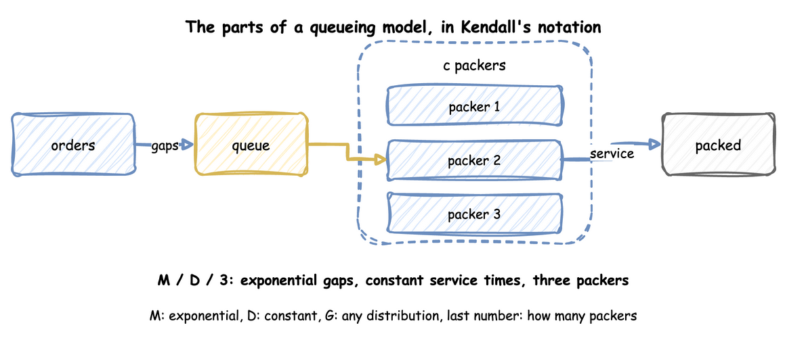
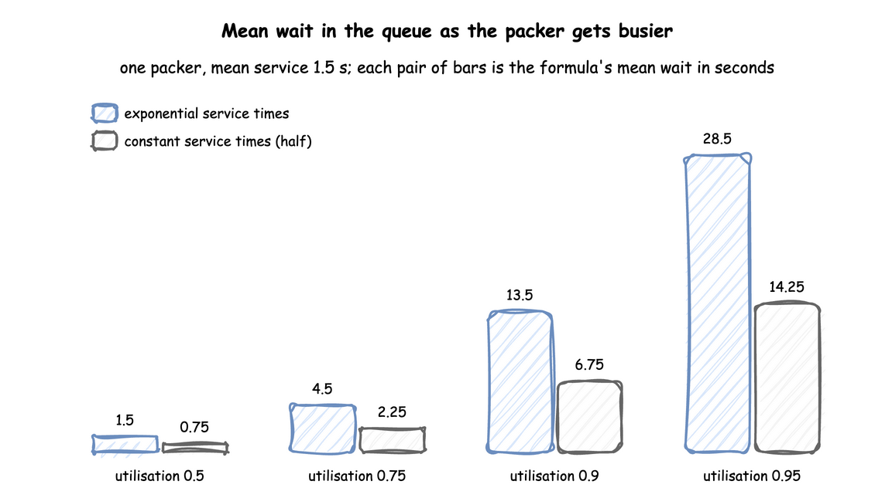

Queueing Basics
A queue forms whenever work arrives faster than it can be served for a while, and the length of the wait depends on more than the averages. This page explains the few results of queueing theory that a simulation study uses, each with a run of the packing shop that checks it. The numbers on this page come from queueing_basics.py, which asserts every one of them.
The sources are the Wikipedia articles on Kendall's notation, Little's law, Kingman's formula and the Erlang C formula. The explanations and the checks are our own.
Parts of a Queue
A queueing model has arrivals, a queue, and one or more servers. In the shop these are the orders, the queue in front of the packers, and the packers. Look at the diagram for the three things a model must say: how far apart orders arrive, how long a packer takes, and how many packers there are.

Kendall's notation writes these as arrivals/service/servers. M is an exponential distribution, D a constant one and G any distribution, and the last number is the count of servers. The shop's busy hour in Queues and Capacity is M/D/3. When a model leaves out the further terms, they have their defaults: the queue has room for any number of orders, the population that orders come from is unlimited, and orders are served in the order they arrive.
The measure that decides everything is utilisation, the share of time a server is busy: the arrival rate times the mean service time, divided by the number of servers. Below 1 a queue is stable and its length settles. At 1 or above, when the gaps or the service times vary, the queue grows without limit. Above 1 it grows in every case, even when the gaps and service times are constant. Queues and Capacity works this out for the shop.
Little's Law
Little's law says that, in a system that settles, the average number of orders in it equals the arrival rate times the average time an order spends in it: L = λ × W. It needs no assumption about the arrival or service distributions or about the order of service, and it holds for the queue alone, for the packers alone, or for both together.
Because it is so general, it is the first check on a model's statistics: the queue length, the arrival rate and the wait are measured separately, and they must agree. Here is the busy hour with three packers. The function runs the shop for 20,000 seconds and returns the arrival rate, the queue length with the mean wait, and the number in the shop with the mean time in the shop:
The shop it uses is built by this function, in which the arrival gaps and the service times are exponential or constant by choice:
Run with exponential gaps of mean 1/1.8 s and constant(1.5) service, it prints:
In both cases the two figures agree within 1%. For the whole shop, the number in service is the mean utilisation times the three packers. Checking and Validating uses this as a test of a model.
Utilisation can be checked the same way. The measured share of time the packers are busy must equal the arrival rate times the mean service time, divided by the number of packers:
| docs/snippets/pages/queueing_basics.py:utilisation-check | |
|---|---|
Waits Near Full Use
For an M/M/1 queue, which has exponential gaps and service times and one server, the mean wait in the queue has a closed form: utilisation ÷ (1 − utilisation) × the mean service time. With constant service times (M/D/1) it is exactly half. Look at how the bars grow faster than the utilisation: from 0.9 to 0.95 the wait more than doubles.

The formulas are short enough to write down and compute:
A queue that is stable can still make orders wait a long time, so a design that only keeps utilisation below 1 is not enough. This is also why the run length matters: near full use, a run needs to be long before its mean wait settles, as Output Analysis explains.
Several Packers
With several packers sharing one queue, the wait depends on the chance that every packer is busy when an order arrives. For exponential gaps and service times (M/M/c) that chance is the Erlang C formula, and the mean wait in the queue is that chance divided by (c ÷ the mean service time − the arrival rate). The erlang_c and mmc_wait functions above compute it.
More packers cut the wait faster than the share of work each does. One packer at utilisation 0.8 makes orders wait 6 seconds. Three packers at the same utilisation make them wait about 1.6 seconds, because an order waits only when all three are busy. Both values come from the formulas, and the script prints them:
Variation Lengthens Waits
Real gaps and service times are rarely exponential. Kingman's approximation covers any distributions, for one server: the mean wait is utilisation ÷ (1 − utilisation) × (arrival variation² + service variation²) ÷ 2 × the mean service time, where variation is the standard deviation divided by the mean, so it is 1 for an exponential distribution and 0 for a constant one. With exponential gaps (variation 1) and constant service (variation 0) it gives half the M/M/1 wait, which is the M/D/1 result above.
The kingman_wait function above computes it. Variation in the gaps counts as much as variation in the service times. A model whose inputs are replaced by their averages shows no queue at all. Choosing Inputs measures how much the spread of an input matters. Common Mistakes lists the replacement among the errors that distort a result.
Check a Formula Against the Shop
Each formula above is checked with the shop. The function runs ten replications of a run, each leaving out its first 2,000 seconds, and returns the mean wait with its 95% half-width. Output Analysis explains why each run leaves out its start and why the interval comes from several runs.
Each check passes when the formula lies within the interval:
The diagram names the busy hour M/D/3, which has no exact formula here. The check runs the shop as M/D/3 at arrival rate 1.8 and compares the runs with half the M/M/3 wait at this load:
The runs (2.05 ± 0.13 seconds) agree with half the M/M/3 wait (2.04 seconds) at this load.
Kingman's formula is an approximation, and the script shows where it is not exact. For constant gaps of 2 seconds and exponential service (D/M/1) at utilisation 0.75:
| docs/snippets/pages/queueing_basics.py:dm1 | |
|---|---|
The formula lies outside the interval of the runs. It is accurate near full use and for the cases above, and a rough guide elsewhere.
What to Take From It
- Compute utilisation first. At 1 or above, the answer is more capacity.
- Check a model's statistics with Little's law before trusting any result.
- Expect long waits near full use, and longer ones when gaps or service times vary.
- Use the formulas to check a model on the cases they cover. They do not replace the simulation, which handles the cases they cannot: several resources, priorities, breakdowns and changing demand.